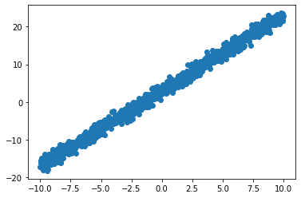
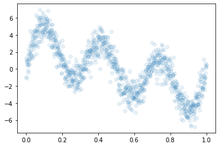
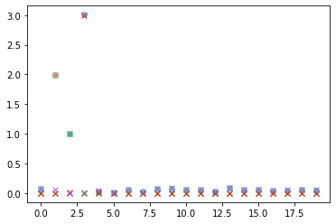
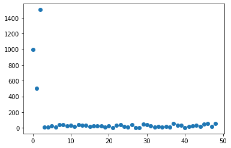
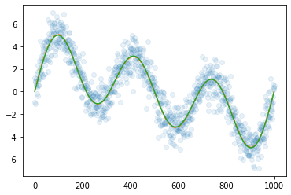
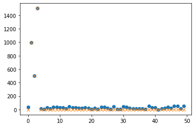
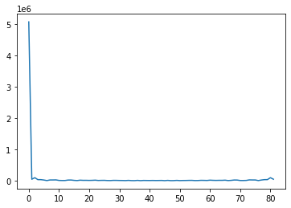
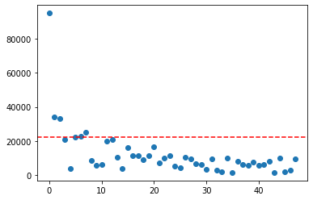
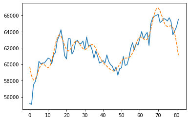
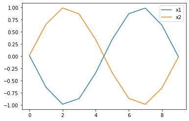

import numpy as np
import matplotlib.pyplot as plt[PINKOCTO] 퓨리에변환4jy
회귀모형 (1)
x = np.linspace(-10,10,1000)
x0 = x*0+1
x1 = x
beta0 = 3
beta1 = 2
y = x0*beta0+x1*beta1+np.random.randn(1000)plt.plot(x,y,'o')
회귀모형 (2)
- 관측한자료
N=1000
x=np.linspace(0,1,N)
eps = np.random.randn(N)
X0 = np.sin(x*0*np.pi)
X1 = np.sin(x*2*np.pi)
X2 = np.sin(x*4*np.pi)
X3 = np.sin(x*6*np.pi)
y=2*X1+1*X2+3*X3+epsplt.plot(x,y,'o',alpha=0.1)
- observed signal
- 위의 자료를 해석하는 방법
def spec(y):
N= len(y)
return abs(np.fft.fft(y)/N)*2 y=2*X1+1*X2+3*X3+eps
yfft =spec(y)
y1=2*X1
y2=1*X2
y3=3*X3
yfft1=spec(y1)
yfft2=spec(y2)
yfft3=spec(y3)
epsfft=spec(eps)plt.plot(yfft[:20],'o',alpha=0.5)
plt.plot(yfft1[:20],'x',alpha=1,)
plt.plot(yfft2[:20],'x',alpha=1)
plt.plot(yfft3[:20],'x',alpha=1)
plt.plot(epsfft[:20],'x',alpha=1)
- 퓨리에변환 -> threshold -> 역퓨리에변환을 이용한 스킬
yfft=np.fft.fft(y)plt.plot(abs(yfft[1:50]),'o')
yfft[abs(yfft)<100] = 0plt.plot(y,'o',alpha=0.1)
yhat=np.fft.ifft(yfft)
plt.plot(yhat,'--')
plt.plot(y-eps,'-')
plt.plot(spec2(y)[:50],'o')
plt.plot(spec2(yhat)[:50],'x')
삼성전자 주가자료를 스무딩해보기
- 삼성전자 자료
import yfinance as yfstart_date = "2023-01-01"
end_date = "2023-05-02"
y = yf.download("005930.KS", start=start_date, end=end_date)['Adj Close'].to_numpy()[*********************100%***********************] 1 of 1 completedplt.plot(y)
- 스펙트럼
yfft = np.fft.fft(y)plt.plot(abs(yfft))
- 처음 50개정도만 관찰
plt.plot(abs(yfft[:50]),'o')
- 첫값이 너무커서 나머지는 잘안보임
- 2번째부터 50번째까지만 관찰
plt.plot(abs(yfft)[2:50],'o')
plt.axhline(y=22500, color='r', linestyle='--')<matplotlib.lines.Line2D at 0x7f6250d5bfd0>
- 대충 이정도 짜르면 될것같음
- thresholded value
tresh_value = 22500yfft[abs(yfft)<tresh_value] =0 - 퓨리에역변환
yhat = np.fft.ifft(yfft)
yhat[:5]array([59664.72193044+8.87311904e-14j, 58572.98839934+8.87311904e-14j,
58066.07369126+3.39894326e-14j, 58169.18671667-6.87747670e-14j,
58706.41986821-1.14383435e-13j])실수화
yhat = np.real(yhat)
yhat[:5]array([59664.72193044, 58572.98839934, 58066.07369126, 58169.18671667,
58706.41986821])- 적합결과 시각화
plt.plot(y)
plt.plot(yhat,'--')
- 숙제: treshold value를 관찰하며 시각화해볼것
minor topics
- y의 FFT 결과는 항상 y와 같은길이임
len(y)82len(np.fft.fft(y))82- 에일리어싱: number of observation은 얼마나 세밀한 주파수까지 측정가능하냐를 결정함
예시1: 에일리어싱
x = np.linspace(-3.14,3.14,10)x1 = np.sin(8*x)
x2 = np.sin(10*x)np.corrcoef([x1,x2])array([[ 1. , -0.99975131],
[-0.99975131, 1. ]])plt.plot(x1,label='x1')
plt.plot(x2,label='x2')
plt.legend()<matplotlib.legend.Legend at 0x7f6252112ee0>
- 실제로는 x2가 더 고주파인데, 같은 주파수처럼 보임
예시2: 에일리어싱이 없는 경우
x = np.linspace(-3.14,3.14,100000)x1 = np.sin(8*x)
x2 = np.sin(10*x)np.corrcoef([x1,x2])array([[ 1.00000000e+00, -6.45767105e-08],
[-6.45767105e-08, 1.00000000e+00]])plt.plot(x1)
plt.plot(x2)
- 주파수 왜곡떄문에 실제로는 corr ceof = 0 일지라도 관측되는건 corr coef >0 일 수 있음